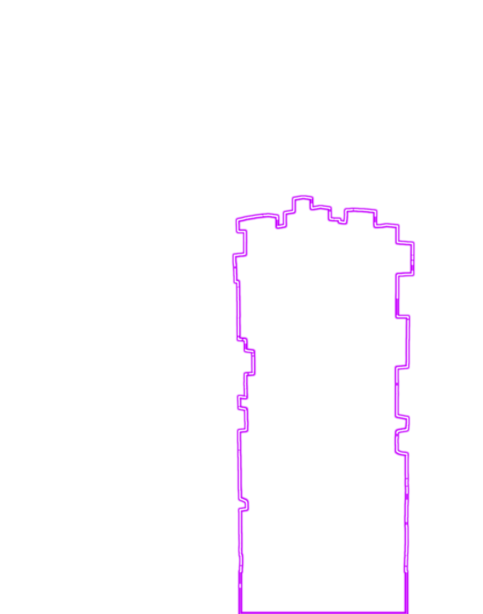

Help us save our building! Tap the incoming cubes to laser them out of the sky.Enter the high score list and get your special cup!
This is an AR game please OK the use of the camera, if nothing works, try to refresh.
Final Score: 0
Try again
